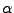
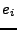
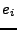
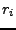

Next: First Order Population Residuals
Up: Residual Calculation
Previous: Map Bayesian Individual Level
Contents
SPK's mixed effects model for the  individual's data is
individual's data is
 |
(12) |
where
 is a vector of fixed effects parameters,
 is the individual's vector of random effects parameters,
and  is a vector of random variables that describe the
measurement noise.
For a complete description of the models used at the population
level by SPK and NONMEM, see Appendix C.
is the individual's vector of random effects parameters,
and  is a vector of random variables that describe the
measurement noise.
For a complete description of the models used at the population
level by SPK and NONMEM, see Appendix C.
Different estimation methods arise from various approximations to
the maximum likelihood objective function. Let
be a particular Taylor series approximation for
.
Let us now define classes of outputs to be calculated in the population case
for individual :
- NONMEM-compatible outputs (no prefix), which are always calculated at zero random effects and for the true model, or
- population outputs (prefix P), or
- linearized outputs (prefix L), or
- individual outputs (prefix I), or
Let the vector of residuals for the individual be
defined as the differences between the individual's data and their
respective approximation as predicted by the model,
|  |
 |
|
(19) |
The variance of the residuals is an approximation to the covariance
of the measurements,
 , which we will call
.
Thus,
. The weighted residuals
can then be defined as
and it is easy to show that .
The covariance matrix for the individual's data is
given by
, which we will call
.
Thus,
. The weighted residuals
can then be defined as
and it is easy to show that .
The covariance matrix for the individual's data is
given by
|
|
|
|
| |
|
|
(20) |
The vector of weighted residuals for the individual is
defined as
where the term multiplying the residuals is the matrix square
root of the inverse of the covariance.
In order to calculate the residuals and weighted residuals, SPK makes
some approximations that are based on the derivations and discussion
in Sections (6.2) and (6.3) of Davidian and Giltinan1.
To be specific, SPK makes Taylor series approximations to (linearizes)
the nonlinear function  about the value . Note that the value or
(either 0 or
about the value . Note that the value or
(either 0 or  ) will
depend on the specific approximation method, see below for details,
) will
depend on the specific approximation method, see below for details,
|
|
|
(22) |
 |
|
|
(23) |
The residuals are therefore in general approximated by
The covariance of the individual's data is approximated by
As a diagnostic, SPK will also provide the weighted individual
parameter residuals at the population level.
Let the vector of residuals for the individual's
parameters be defined as the differences between zero and the
values for their individual parameters,
The covariance matrix for the individual parameters is
|
|
|
|
| |
|
|
(27) |
The vector of weighted individual parameter residuals is
defined as
where the term multiplying the residuals is the matrix square
root of the inverse of the covariance.
Next: First Order Population Residuals
Up: Residual Calculation
Previous: Map Bayesian Individual Level
Contents
Mitch Watrous
2007-12-17